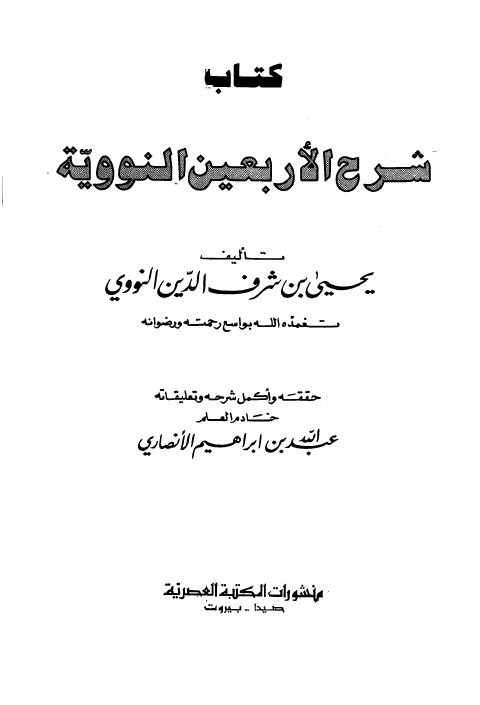
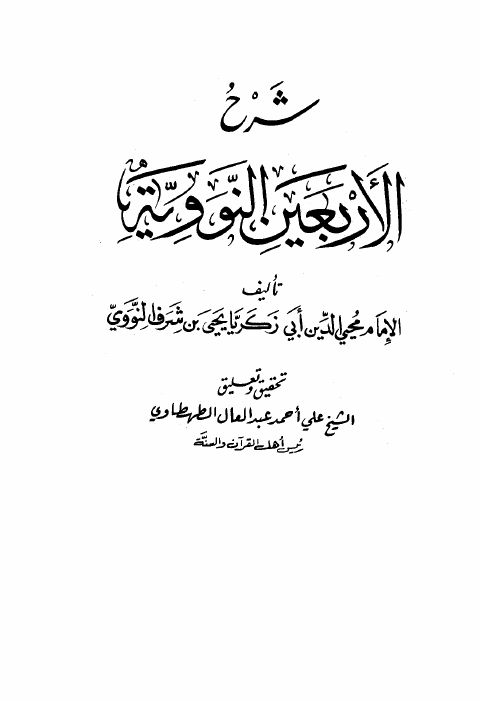
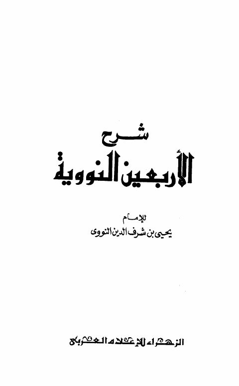
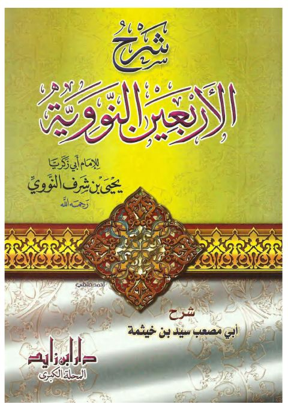

شرح الأربعين النووية - عبد الكريم الخضير
عبد الكريم الخضير
(d. -)
Details
- الكتاب
- شرح الأربعين النووية
- مؤلف الأصل
- أبو زكريا محيي الدين يحيى بن شرف النووي (ت ٦٧٦هـ)
- الشارح
- عبد الكريم بن عبد الله بن عبد الرحمن بن حمد الخضير
- دروس مفرغة من موقع الشيخ الخضير
- الكتاب مرقم آليا، رقم الجزء هو رقم الدرس - ١٤ درسا
- صفحة المؤلف
- عبد الكريم الخضير
About the author
Arabic original
عبد الكريم الخضير (١٣٧٤ - ؟ هـ = ١٩٥٥ - ؟م)
اسمه: عبد الكريم بن عبد الله بن عبد الرحمن بن حمد الخضير.
* مكان وتاريخ الولادة: ولد في بريده سنة ١٣٧٤هـ.
* عمله: عضو هيئة التدريس في قسم السنة وعلومها في كلية أصول الدين بجامعة الإمام محمد بن سعود الإسلامية بالرياض الى أن تقاعد تقاعدا مبكرا في ٢٧/٨/١٤٢٤ هـ ،وفي يوم ١٩/٢/١٤٣٠ صدر الأمر الملكي بتعيين الشيخ حفظه الله عضوا في هيئة كبار العلماء.
* شيوخه:
* في القصيم:
١- الشيخ مبارك بن حسن الراجح رحمه الله.
٢- الشيخ إبراهيم بن محمد المشيقح حفظه الله.
٣- الشيخ محمد ذاكر حفظه الله.
٤- الشيخ محمد بن صالح المطوع رحمه الله.
٥- الشيخ صالح بن أحمد الخريصي رحمه الله.
٦- الشيخ صالح السكيتي رحمه الله.
٧- الشيخ علي الضالع رحمه الله.
٨- الشيخ محمد بن علي الروق رحمه الله.
٩- الشيخ فهد بن محمد بن حمود المشيقح حفظه الله.
* في الرياض:
١- الشيخ عبد الله بن عبد الرحمن الغديان حفظه الله.
٢- سماحة الشيخ عبد العزيز بن عبد الله بن باز رحمه الله.
٣- الشيخ فهد بن حمين الفهد الحمين رحمه الله.
٤- الشيخ عبد الرحمن السد حان حفظه الله.
٥- الشيخ عبد العزيز الداود حفظه الله.
٦- الشيخ عبد العزيز الفالح حفظه الله.
٧- الشيخ صالح بن عبد الرحمن الأطرم حفظه الله.
* مؤلفاته:-
١- الحديث الضعيف وحكم الاحتجاج به ( مطبوع ).
٢- تحقيق النصف الأول من فتح المغيث للسخاوي ( مطبوع ).
٣- تحقيق الرغبة شرح النخبة ( مطبوع ).
٤- شرح قصب السكر ( مخطوط ).
٥- شرح الورقات ( مخطوط ).
٦- شرح التجريد الصريح لأحاديث الجامع الصحيح ( مخطوط).
- وله تعليقات و تنبيهات على أمهات الكتب والشروح من كتب التفسير والحديث
والعقيدة وغيرها.
* * *
تعريفه:-
هو عبد الكريم بن عبد الله بن عبد الرحمن بن حمد الخضير يكنى بأبي محمد من مواليد بريده سنة ١٣٧٤ هـ ويبلغ من العمر الآن قرابة الخمسين أمد الله في عمره على الطاعة.. قرأ القران على مقرئ في الصبا اسمه مبارك بن حسن الراجح ثم قرأ على الشيخ إبراهيم بن محمد المشيقح ثم في سنة ١٣٨٥ هـ قرأ على فضيلة الشيخ محمد ذاكر قسما كبيرا من القران وحفظ عليه البقرة وال عمران ,,,
دراسته النظامية:-
دخل المدرسة الابتدائية سنة ١٣٨١ هـ ثم تخرج منها سن١٣٨٦ هـ على اثرها دخل المعهد العلمي في بريده سنة١٣٨٧ هـ وتخرج فيه سنة ١٣٩٣ هـ ثم التحق بعدها بكلية الشريعة بالرياض في السنه نفسها وتخرج فيها سنة ١٣٩٧ هـ على إثرها عين معيدا بكلية اصول الدين في قسم السنة وعلومها ثم واصل وتابع الدراسه العليا فحصل على درجة الماجستير سنة ١٤٠٢هـ وكانت رسالته بعنوان ( الحديث الضعيف وحكم الاحتجاج به ). ثم بعد ذلك في سنة ١٤٠٧هـ حصل على شهادة الدكتوراه وكانت رسالته بعنوان ( تحقيق النصف الأول من فتح المغيث بشرح الفية الحديث للحافظ محمد بن عبدالرحمن السخاوي ) عين على اثرها أستاذا مساعدا في قسم السنه وعلومها بكلية اصول الدين وعمل بها استاذا مساعدا الى أن تقاعد تقاعدا مبكرا في ٢٧/٨/١٤٢٤ هـ وهو ابن خمسين سنة،وفي يوم ١٩/٢/١٤٣٠ صدر الأمر الملكي بتعيين الشيخ حفظه الله عضوا في هيئة كبار العلماء.
طلبه للعلم:-
في سنينه الأولى قرأ على الشيخ محمد بن صالح المطوع رحمه الله مبادئ العلوم (ثلاثة الاصول - واداب المشي إلى الصلاة - وزاد المستقنع وكتاب التوحيد) وغيرها
من المتون في أصول العلم.. ثم قرأ ولازم صاحب الفضيله الشيخ صالح بن احمد الخريصي رئيس محاكم القصيم في وقته رحمه الله ثم انتقل إلى الرياض فقرأ على الشيخ عبدالله بن عبد الرحمن الغديان في أصول الفقه والقواعد الفقهيه وعلى سماحة الشيخ عبد العزيز بن عبد الله بن باز رحمه الله في ( الفرائض وفي تفسير ابن كثير وفي سنن الترمذي ) وغيرها من الكتب وقد لازمه وقرأ عليه في المسجد وفي بيته رحمه الله..ثم بعد تخرجه من كلية الشريعة وفي السنة التمهيدية تفرغ لجرد المطولات وقراءتها والتعليق عليها واستخراج مكنوناتها فقد قرأ حفظه الله في كتب التفسير والحديث وكتب العقائد وقد قرأ أيضا في كتب الفقه والتاريخ والأدب ,,,
ثم قرأ على الشيخ صالح بن عبد الرحمن الأطرم أوائل شرح البخاري للحافظ بن حجر وأما بالنسبة لشيوخه في المعهد العلمي في بريده فمنهم الشيخ صالح السكيتي والشيخ على الضالع والشيخ محمد الروق رحمهم الله والشيخ فهد بن محمد المشيقح حفظه الله وغيرهم!
,,,
وأما بالنسبة لشيوخه الذين تتلمذ على يديهم في كلية الشريعة فنذكر منهم الشيخ فهد الحمين والشيخ عبد العزيز الداود والشيخ عبد العزيز الفالح والشيخ عبدالرحمن السد حان حفظهم الله وغيرهم من العلماء والمشائخ ,,,
* كما يتجلى حرص الشيخ حفظه الله على طلب العلم من خلال مكتبته العلمية العامرة بأصناف الكتب والمخطوطات تعد مرجعا لكثير من الباحثين.
مشاركا ته العلمية:-
للشيخ مشاركات علميه كثيرة من خلال إشرافه على الرسائل المقدمة لنيل درجة الماجستير والدكتوراه في قسم السنة وعلومها , ومن خلال دوراته العلمية المتنوعة والتي تم تسجيل كثير منها ومن ذلك ( شرح كتاب الصيام من زاد المستقنع- وكتاب الحج من الكتاب نفسه- وشرح حديث جابر في الحج- وشرح نخبة الفكر ونظمها- وشرح الورقات ونظمها ) وشروح كثيرة وأكثرها مسجل ولله الحمد.
ولقد شارك الشيخ في دورات علمية في كثير من أنحاء المملكة.
* كما أن للشيخ أيضا مشاركات إذاعية في إذاعة القرآن الكريم وهي:
* أول هذه البرامج لقاء في موكب الدعوة تحدث فيها عن حياته العلمية والعملية اجرى هذا اللقاء الاستاذ محمد المشوح أذيع سنة ١٤٢٠هـ.
* كما أن له ثلاثون حلقة في فقه الصيام نشر في رمضان سنة ١٤٢١هـ.
* كما أن له أيضا درس أسبوعي في الإذاعة نفسها في شرح مختصر صحيح البخاري للزبيدي.
* كما أن له ثلاثون حلقة في الهدي النبوي في رمضان أذيع سنة ١٤٢٣هـ.
*كما أن له ثلاثون حلقة في الشمائل النبوية أذيع في رمضان سنة ١٤٢٤هـ.
*كما أن له ثلاث عشرة حلقة في فقه الامام البخاري في الحج أذيع في موسم الحج سنة ١٤٢٤هـ.
* كما أن له لقاءات في الاذاعة نفسها حول مكتبة طالب العلم.
*كما أنه يجيب عن اسئلة المستمعين في اذاعة القرآن ويبث كل يوم جمعة في الرابعة عصرا.
دروسه:
للشيخ دروس علميه متفرقة على فترات في أكثر أيام الأسبوع وقد قرأ عليه حفظه الله في دروس سابقة كثير من المتون والشروح العلمية منهاما أتم كاملا ومنها ما قرأ بعضها نذكرها بإيجاز:
( شرح الورقات للمحلي , القلائد العنبرية في شرح المنظومة البيقونية , خلاصة الكلام , التعليقات السنية على العقيدة الواسطية لابن سعدي , التوحيد لابن خزيمة , مختصر قواعد ابن رجب لابن سعدي , شرح علل الترمذي , فتح الباري , ألفية الحديث , البلبل في أصول الفقه , الباعث الحثيث , قصب السكر , الموطأ , مسند الإمام أحمد , المنتقى للمجد ابن تيمية , فتح المجيد , كتاب التوحيد , تيسير العزيز الحميد , قرة عيون الموحدين , الآجرومية , أخصر المختصرات , المفهم شرح
مختصر صحيح مسلم للقرطبي , الموقظة للذهبي , فتح المغيث , الكافي لابن قدامة , ثلاثة الأصول , الأربعين النووية ، الدرر السنية، تفسير الجلالين , تفسير ابن كثير)…
-
نقلا من موقع الشيخ الرسمي
- التعليق على تفسير الجلالين - عبد الكريم الخضير
- التعليق على تفسير القرطبي - عبد الكريم الخضير
- الحديث الضعيف وحكم الاحتجاج به
- دروس الشيخ عبد الكريم الخضير
- شرح ألفية العراقي - عبد الكريم الخضير
- شرح اختصار علوم الحديث - عبد الكريم الخضير
- شرح الآجرومية - عبد الكريم الخضير
- شرح الأربعين النووية - عبد الكريم الخضير
- شرح التجريد الصريح لأحاديث الجامع الصحيح - عبد الكريم الخضير
- شرح الدروس المهمة لعامة الأمة
- شرح العقيدة الواسطية - عبد الكريم الخضير
- شرح اللؤلؤ المكنون في أحوال الأسانيد والمتون
- شرح المحرر في الحديث - عبد الكريم الخضير
- شرح المنظومة البيقونية - عبد الكريم الخضير
- شرح المنظومة الحائية لابن أبي داود
- شرح المنظومة الميمية في الآداب الشرعية
- شرح الموطأ - عبد الكريم الخضير
- شرح الورقات - عبد الكريم الخضير
- شرح بلوغ المرام - عبد الكريم الخضير
- شرح جوامع الأخبار - عبد الكريم الخضير
- شرح حديث جابر في صفة حج النبي للخضير
- شرح رسالة أبي داود لأهل مكة
- شرح زاد المستقنع - عبد الكريم الخضير
- شرح سنن الترمذي - عبد الكريم الخضير
- شرح صحيح البخاري - عبد الكريم الخضير
- شرح عمدة الأحكام - عبد الكريم الخضير
- شرح كتاب التوحيد - عبد الكريم الخضير
- شرح كتاب الحج من صحيح مسلم - عبد الكريم الخضير
- شرح كتاب الصيام من تقريب الأسانيد
- شرح كتاب الصيام من عمدة الفقه - عبد الكريم الخضير
- شرح كتاب العلم لأبي خيثمة - عبد الكريم الخضير
- شرح كتاب الفتن من صحيح البخاري - عبد الكريم الخضير
- شرح لامية شيخ الإسلام
- شرح مختصر الخرقي - عبد الكريم الخضير
- شرح مقدمة التفسير (من النقاية) للسيوطي
- شرح مقدمة سنن ابن ماجه
- شرح مقدمة صحيح مسلم
- شرح منسك شيخ الإسلام ابن تيمية
- شرح نخبة الفكر للخضير
- شرح نظم عقيدة السفاريني
- كيف يبني طالب العلم مكتبته
- كيف يستفيد طالب العلم من كتب السنة
- مقارنة بين شروح كتب السنة الستة
Shares most with
- فتاوى الشبكة الإسلامية 99
- جمع الجوامع المعروف بـ «الجامع الكبير» 88
- المسند الموضوعي الجامع للكتب العشرة 88
- مجلة البحوث الإسلامية 86
- موقع الإسلام سؤال وجواب 84
- المسند المصنف المعلل 80
- البحر المحيط الثجاج في شرح صحيح الإمام مسلم بن الحجاج 79
- جامع العلوم والحكم - ت أبي النور 78
- الجامع الكامل في الحديث الصحيح الشامل المرتب على أبواب الفقه 78
- مرقاة المفاتيح شرح مشكاة المصابيح 76
- مسند أحمد - ط الرسالة 73
- مجلة البيان 73
Also in the catalogue

شرح الأربعين النووية- ت. الأنصاري شرح الأربعين النووية- ت. الأنصاري يحيى بن شرف النووي
شرح الأربعين النووية- ت. الطهطاوي شرح الأربعين النووية- ت. الطهطاوي يحيى بن شرف النووي
شرح الأربعين النووية- الزهراء شرح الأربعين النووية- الزهراء يحيى بن شرف النووي الرياض الزكية شرح الأربعين النووية للخضير
الرياض الزكية شرح الأربعين النووية للخضير
عبد الكريم عبد الله الخضير
الرياض الزكية شرح الأربعين النووية للخضير
الرياض الزكية شرح الأربعين النووية للخضير
عبد الكريم عبد الله الخضير

شرح الأربعين النووية شرح الأربعين النووية يحيى بن شرف النوويContents